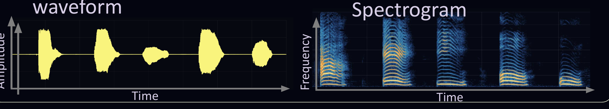
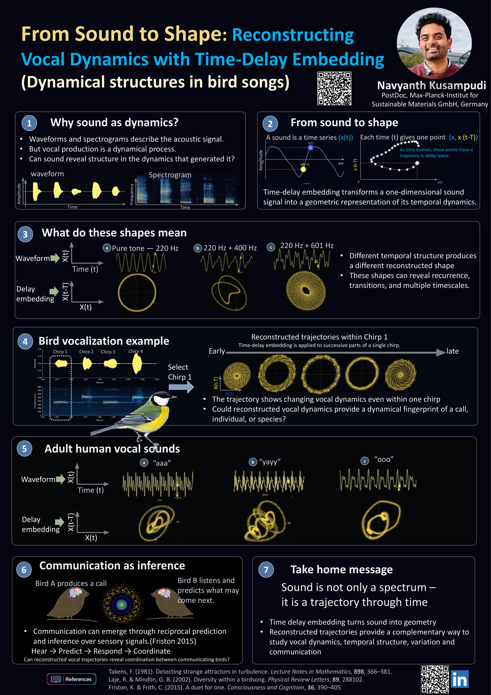
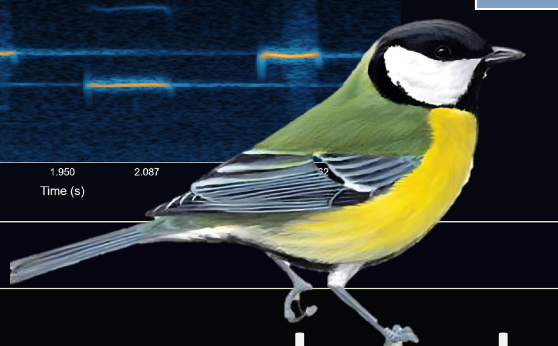
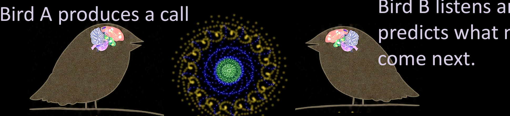

1
Why sound as dynamics?
- Waveforms and spectrograms describe the acoustic signal.
- But vocal production is a dynamical process.
- Can sound reveal structure in the dynamics that generated it?

Interactive conference poster
Dynamical structures in bird songs


Time-delay embedding transforms a one-dimensional sound signal into a geometric representation of its temporal dynamics.
Different temporal structure produces a different reconstructed shape. These shapes can reveal recurrence, transitions, and multiple timescales.
The trajectory shows changing vocal dynamics even within one chirp. Could reconstructed vocal dynamics provide a dynamical fingerprint of a call, individual, or species?

Communication can emerge through reciprocal prediction and inference over sensory signals.

Hear → Predict → Respond → Coordinate
Can reconstructed vocal trajectories reveal coordination between communicating birds?
Sound is not only a spectrum – it is a trajectory through time.